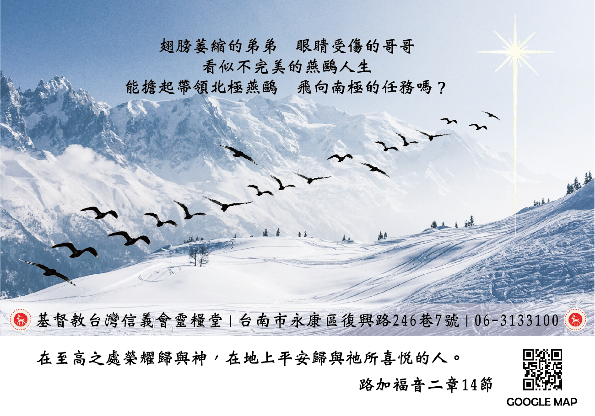

基督教臺灣信義會
靈糧堂 週報

1. 12/26(六)為聖誕晚會，邀請安樂聖教會蒞臨本堂表演聖誕劇; 12/27 (日)為聖誕主日，會後有豐富的愛筵便當，請弟兄姊妹到招待處索取邀請卡，邀請親朋好友來參加。

2. 教會預定12/27(日) 舉行受洗典禮，已經填表報名「入會禮」有姚添財弟兄和劉非比姊妹; 「兒童洗」有林宇翔弟兄 。若有未受洗的弟兄姊妹願意受洗或願意轉會加入本堂者，請盡快跟辦公室領取報名表。
3. 教會六十周年徵文已開始了，徵求生命見證，請區長和小組長能力邀組員將神在他們生命中成就美好的事寫下來與大家分享。請將見證寄到: church20200401@gmail.com 記得附上個人生活照。
4. 12月份為聖誕感恩節，教會備有聖誕感恩奉獻袋，是向偉大奇妙的神心存讚美感謝並且甘心樂意的獻上感恩奉獻。
5. 12月1日起政府防疫更加積極，各位弟兄姊妹參加主日及各個聚會應該要戴口罩，加強消毒丶量體溫，包括講員及敬拜團隊。
6. 陳信宏和莊真瑋伉儷的女兒陳以愛滿月請吃油飯，會後大家一起來分享他們的喜悅。
星期 |
時間 |
聚會名稱 |
|---|---|---|
主日 |
上午10點00分 |
主日崇拜、兒童主日學 |
主日 |
下午12點30分 |
長青小組、以勒小組、約書亞小組、保羅小組 佳美小組、盛愛小組、帝寶小組 |
週三 |
晚上08點00分 |
美女小組 |
週四 |
早上09點30分 |
良善小組 |
週四 |
晚上07點15分 |
喜樂小組 |
週四 |
晚上08點00分 |
凡恩小組 |
週五 |
晚上07點30分 |
牛棚小組、得勝小組、百合小組 |
週五 |
晚上08點00分 |
1+7小組 |
週六 |
晚上07點30分
學青牧區 |